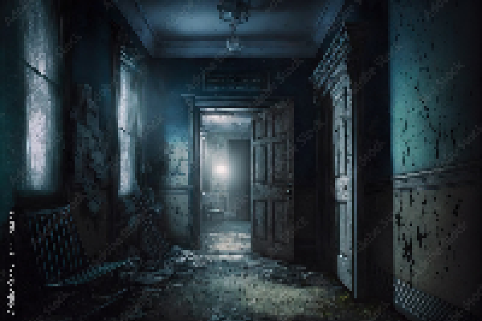

An Intersection

As you are exploring the creepy hallway, you reach an intersection where you have the choice between a bedroom, where you can almost hear the sounds of crying, or a closed door. How do you proceed?